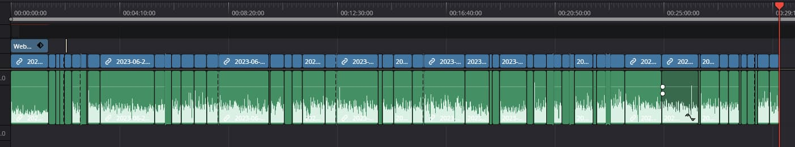

Qui je suis ?
Jonathan Boyer
- Développeur fullstack
- Principalement autodidacte
- Formateur / Tutoriels vidéos sur grafikart.fr
Arrêtez de regarder
des tutoriels !
Internet est une mine d'information
On trouve de tout
Il y a beaucoup de tutoriels
Vraiment beaucoup !
La spirale des tutoriels
"Tutorial hell"
Pourquoi est-ce un problème ?
Méthode passive
Les tutoriels trichent
La préparation cache la recherche

Améliorer son apprentissage
Prendre des notes
- Noter les points importants
- Flash card (ou carte de révision)
Pratiquer pour mieux apprendre
- Répéter permet de mémoriser
- Se fixer un objectif hors du cadre
- Entrainer son esprit logique
Multiplier les sources
- Découvrir plusieurs approches
- Il n'y a pas que les tutoriels (article, conférence...)
N'hésitez pas à aller à la source
Les documentations comme seule source de vérité
Demander de l'aide
Pour ne pas rester bloquer
Pourquoi faire des tutoriels ?
Pour les francophones
Tout le monde n'est pas à l'aise avec l'anglais
Combler les mauvaises docs
Proposer un fil d'apprentissage plus rapide
Ils peuvent être utiles
- Apprendre les bases
- Découvrir une technologie
- Retour d'expérience
- Organisation du code / "Bonnes pratiques"
Sélectionnez
Ne vous sentez pas obligé de tout regarder
Formations
Pourquoi suivre une formation si on a les tutoriels ?
Avoir un référent
Pouvoir poser des questions, demander des explications
Effet de groupe
Apprendre par les autres
Conclusion
- Apprenez les bases
- Pratiquez par vous-même